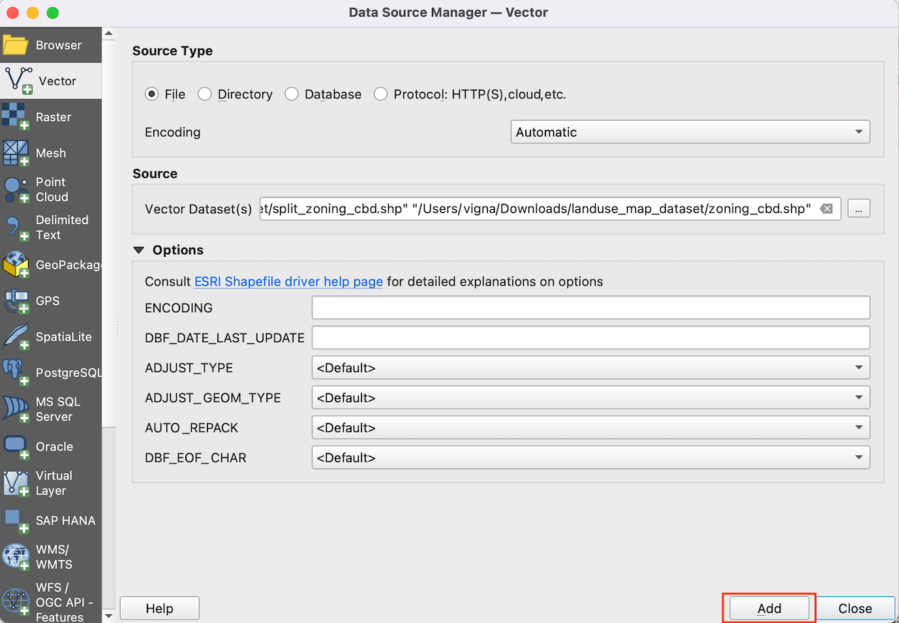
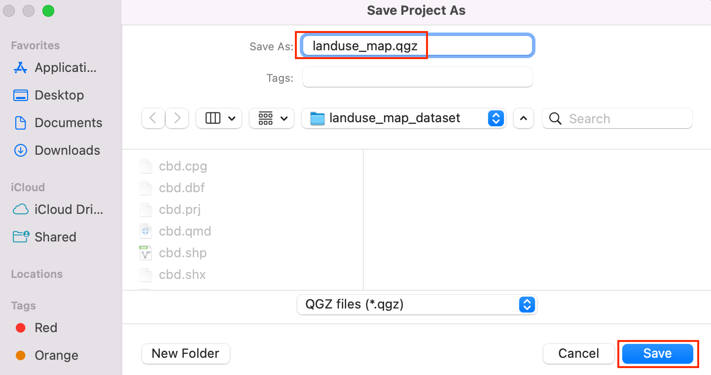
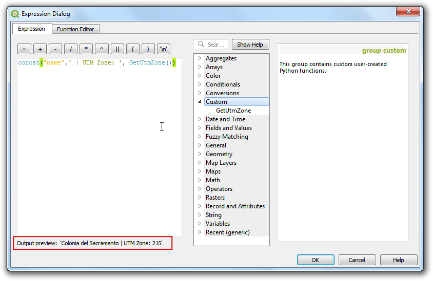
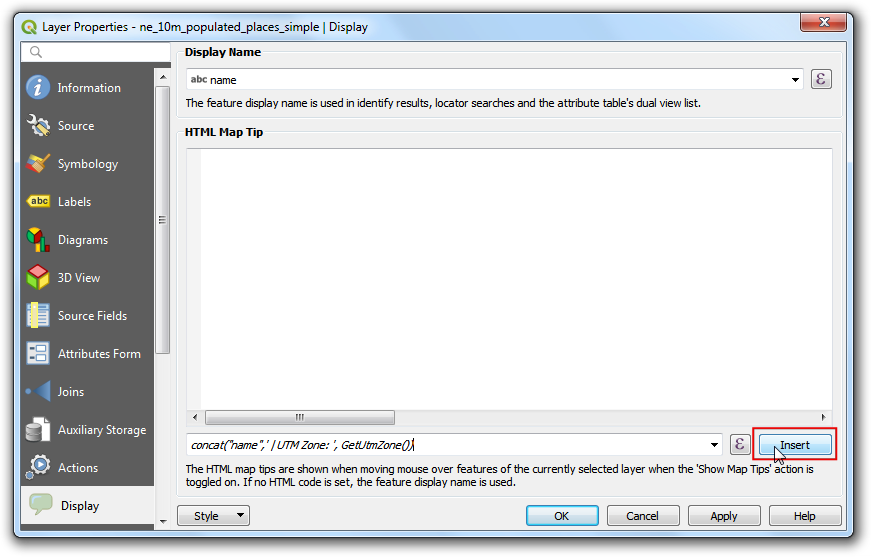
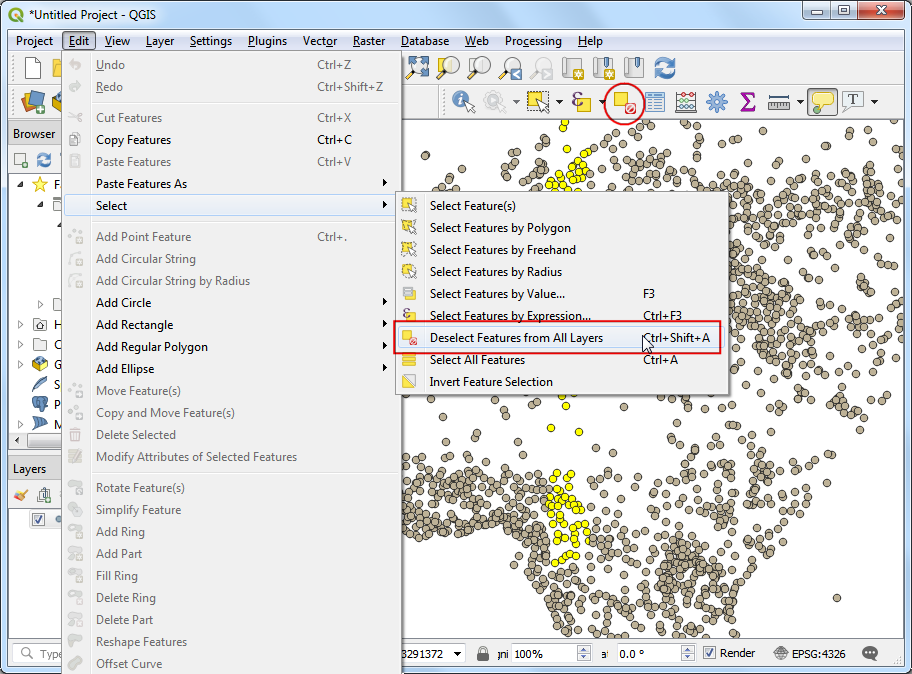

Cercare e Scaricare Dati OpenStreetMap (QGIS3)¶
Getting high quality data is essential for any GIS task. One great resource for free and openly licensed data is OpenStreetMap(OSM) . The OSM database consists of all types of mapping data - streets, local data, building polygons, administrative boundaries etc. Getting access to OSM data in a GIS format in QGIS is possible via the QuickOSM plugin. This tutorial explains the process for searching, downloading and using this plugin.
Descrizione del compito.¶
Individueremo Londra all’interno del database OSM, esamineremo e selezioneremo un settore della città, quindi estrarremo tutti i punti indicanti le posizioni dei pub in quella zona e, infine, collocheremo questi punti all’interno di un nuovo livello vettorial.
Altre capacità che si acquisiranno¶
How to chain multiple queries in QuickOSM plugin.
Procedura¶
Search and install the QuickOSM plugin from the QGIS Official Plugin Repository. See Usare i Plugins for instructions on downloading plugins. Make sure you have the checkbox selected. Click Close.

Once installed, launch the plugin from .

In the Quick query tab, you can set a filter to select a subset. The attributes of the map features in the OSM database are stored as Tags. Tags are represented with a key and a value. The key is a topic and a value is a specific form. See the OSM Map Features wiki page for a comprehensive list of tags for various types of features. Bars are represented using the tag
amenity:barand pubs with the tagamenity:pub. We will first extract the bars. Selectamenityas the Key from the drop-down menu.

Seleziona ``bar``dal menu Value.

We can chain multiple queries in the latest version (v2.0.0 +) of the QuickOSM plugin. Click on the plus button next query selection bar will appear. Click on the first selection box where we can get option
AndandOr. And will select only feature which is true for all queries. Or will select all features which are true for any of the queries. ClickOrto select both bar and pub features.

Select
amenityas the Key from the drop-down menu. Then selectpubfrom the Value drop-down menu.

Seleziona
Londonnella sezione In per limitare la ricerca nell’area di Londar.

Esapandi la sezione Advanced section. Nel modello OSM gli elementi sono rappresentati utilizzando nodes, ways and relations. Noi siamo interessati negli elementi puntuali, quindi potete selezionare solo
NodeandPoints. Cliccare Run query.

Once the query finishes, switch to the main QGIS window. You will see a new layer called
amenity_bar_amenity_pub_Londonadded to the Layers panel. The canvas will show the locations of the bars and pubs that were extracted.

Open the Attribute table of the layer. There are
2091features. The column amenity contains the category whether the feature ispuborbar. Using this categorical column, lets style our layer.

Click on the Open the Layer Styling panel icon, select
Categorizedthen in Value selectamenitythen click Classify. Now the layer will be styled with 2 color featuring bothbarsandpubs.

Now right-click on the layer, to export the layer as GeoPackage.

In the Save Vector Layer as… dialog box, in Format choose
GeoPackage, in File name click...and browse to the directory where you want to save the data and name the outputlondon.gpkg. In Layer name enterbar_and_pubs. Click OK.

Now a GeoPackage layer
london_bar_and_pubswill be added to the canvas.

If you want to give feedback or share your experience with this tutorial, please comment below. (requires GitHub account)